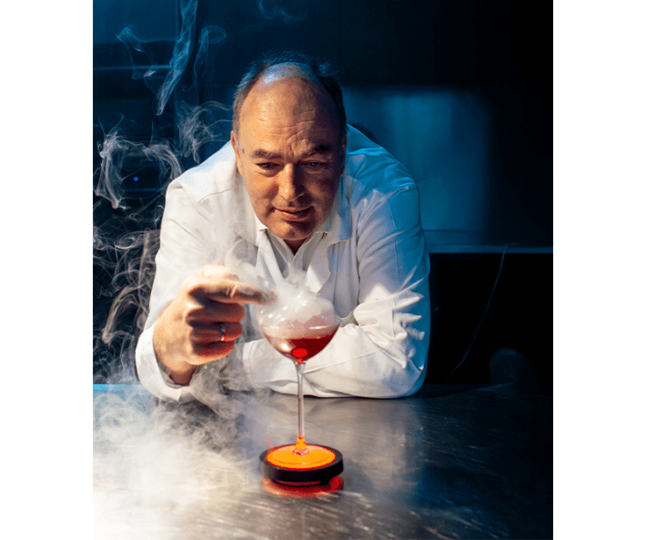

Most of us would say we taste food with our tongues. Charles Spence has spent decades showing that we eat with our eyes, our ears, our fingertips, even our emotions.
An experimental psychologist at Oxford University, Spence has learned that when we sit down for a meal, all of our senses come to the table, and some of them have unexpected effects. Heavier cutlery, for example, makes a meal more pleasurable, he has found, and flavors in space are often duller. Foods that sound better taste better, too: In his infamous “sonic chip” experiments, he found that the louder the crunch of your Pringles potato chip, the fresher it tastes, work that won him a 2008 Ig Nobel Prize (which celebrates real science with a side of humor).
Spence has also explored the ways our senses shape our palates in numerous books. In Gastrophysics: The New Science of Eating, he presents a tour of all of the strange invisible forces that color eating and explains why your brain is the real chef. In The Perfect Meal: The Multisensory Science of Food and Dining, he and his colleague Betina Piqueras-Fiszman map the entire multisensory ecosystem of dining. And in Sensehacking: How to Use the Power of Your Senses for Happier, Healthier Eating, he recommends ways to employ colors, sounds, and scents to reduce stress and better your quality of life.
Spence’s newest line of research connects biophilia to flavor: How glimpses of green, a whiff of cedar, or the call of a seagull can change what we choose to eat and how we think it tastes. Many high-end restaurants have begun experimenting with building the eating experience around nature-related sensory elements, such as sounds and smells and tactile pieces, sometimes to dramatic effect.
We caught up with Spence shortly after his trip to a cloud forest outside of Bogotá, Colombia, where he’d been eating breakfast, lunch, and dinner outdoors—so long as it wasn’t raining. We talked about why a single word on a menu can make a dish sell out, why certain culinary experiences leave diners in tears, and why rosé tastes better on a beach in Provence than back home in your kitchen on a Monday night. Also why the simplest dishes are still the most delicious.

SENSE AND SENSIBILITY: Experimental psychologist Charles Spence at Kitchen Theory in London, enjoying a mulled wine cocktail with a “bubble smoking gun,” an edible bubble that bursts when you sip, releasing the aroma of ginger in a cloud of smoke. The element of visual theater and the edible bubble are meant to enhance flavor perception, tricking the brain into thinking you can taste the smell. “This is a modernist take on Xmas,” Spence writes in an email. “Ginger is a warming winter spice, but often dissipates, hence captured in the bubble.” Photo courtesy of Kitchen Theory.
In your work you often talk about the Provençal rosé paradox. Can you explain what it tells us?
We all feel like we can really just taste our food and drink. None of us feel in the moment that the atmosphere, the environment, the nature does something to us or to our judgments. That’s why I always start with the Provençal rosé paradox. Northern Europeans go on their summer holidays to the Mediterranean quite often. It’s warm and sunny on the beach, and the food and wine taste wonderful. And everyone brings some back home to share with friends and family on a cold winter’s night. And it just doesn’t taste the same.
You say, “well, maybe it got shook up in the airplane or got cold. That’s what’s spoiled it.” But I think the wine’s exactly the same. Your mood and environment are different. Everyone holds within them the belief that I can really taste the gin and tonic in my glass or the Doritos on my plate, but the research shows it’s influenced by the softness of the chair I’m sitting on, or the dimness of the light. And why is it that the rosé tastes so good on vacation? Is it the sound of the seagulls? Is it the warm sun, is it the relaxation in your mood? Well, that’s all subject for experimentation, investigation. I think all of those things matter.
You recently began looking at the relationship between food and biophilia, the idea that humans are innately attracted to nature and natural forms. What inspired you?
When the biophilia research first came out decades ago, it was kind of flimsy. All these studies aimed to show that going out into nature is beneficial, regardless of the sense with which you experience it—sight, sound, smell, touch, taste. But by the time I revisited the literature in 2021 for my Sensehacking book, the studies had gotten so much more rigorous. And it really seemed to show that exposure to nature has amazing effects.
Around the same time, a number of chefs began doing immersive dining through projections and sound effects and smells. These chefs could have created any kind of immersive environment, Mars or being under the water, but all of them seemed to choose to recreate nature: The sounds of the sea, the smell of the salty sea air, forest scenes. Chef Jozef Youssef of Kitchen Theory in London has a mushroom dish that involves projecting greens onto the table, the sounds of the forest, the smell of the earth after it rains, and a plate made from a slice of tree trunk. So it got me thinking, maybe these things are connected. Maybe intuitively the chefs have figured out that by recreating nature, it both emphasizes the natural source of the ingredients, but it also has an effect that helps to improve the diners’ well-being.
Now we have research showing that the blues or greens of water, the color or scent of flowers, even birdsong, can make food taste better and make it easier to tell flavors apart. We’ve even got experiments suggesting that nature soundscapes and water soundscapes will nudge people to make more sustainable food choices, and leave less food waste. The presence of warm ambient odors like cedarwood seems to make people eat fewer calories and mixed herb scents make people choose more wholesome things to eat. These findings could have implications for vending machines, frontline sales, even self-help.
A recent meal included a course of rice pudding that makes 60 percent of his diners cry.
What are ways architects and designers could use this to support healthy eating?
Bringing nature into the built environment. Interestingly to me, you might think that it has to be real nature, real birds and real plants, not staring at the screensaver that’s got a nature scene or at a plastic plant. But all the research I can find says they’re just as good. Since digital nature is as efficacious as real nature, we can start to caricature digital natural environments or plastic natural environments to have more of the stuff that’s good for us. And this works for any of the senses. Through hearing, anything that includes nature sounds or water sounds, but the more naturalistic the bird song the better, and the more bird varieties the better. Through touch, a rough surface or a textured surface rather than a smooth one.
You mention the nature-inspired sensory elements many chefs are using in their restaurants. For some people it seems these sensory elements have surprising emotional effects. There is one immersive dish called Sound of the Sea, served at chef Heston Blumenthal’s The Fat Duck restaurant in Bray, in the United Kingdom, that features the sounds of the sea and birds played through a conch shell on the table. The visual presentation of the dish is designed to look like the seashore. The dish consistently makes people cry. And I wondered, why would an experience like that make someone tearful?
That seaside dish is not the only one that makes people cry. I came across a chef in Milan, formerly a filmmaker, named Federico Rottigni. He’s got a restaurant called Sensorium, that offers a multisensory dining experience where the meal engages all five senses—sight, sound, taste, touch, and smell—to tell a cohesive narrative story. He cycles the theme of his menu every year or so. And a recent one is ayahuasca, albeit without the hallucinogens, which included a course of rice pudding that makes 60 percent of his diners cry or feel like crying.
When I met him, he said to me, “I didn’t plan my dish, my menu this way. None of my previous menus have had this effect. I don’t really know what’s going on. But this one dish, people are crying and as a chef, I’ve no idea what’s going on.” And so we have been doing experiments for the past year in his restaurant with 100 diners who have the full multisensory experience. And then you get a questionnaire: Did you cry tonight? Which course did you cry for? How much did you like that dish? And then we tested 100 people without some of the multisensory bits and pieces, and asked how often did you cry. And then 100 delivery drivers are given a bowl of rice pudding. Of course, the delivery drivers don’t feel like crying.
Taste consciousness research doesn’t really exist. But it should.
No one will cry when they walk into a restaurant for the first dish. So you need to settle, need to relax a bit. It’s more likely later in the meal that you might cry than at the beginning. So this rice pudding dish is number six out of 10 courses. And the emotional trajectory of the story being told through the meal is a kind of Cinderella story. And at that rice pudding stage of the meal, the emotional trajectory of the story has gone from things really bottoming out to the final ascent. You’ve got nostalgia and it comes with low-frequency vibrations, these very low-frequency sounds that you can’t hear, but when they’re happening you’re more aware of your body. All together it creates an extraordinary response. We’ve got the data and the graphs and the results, but we haven’t published it yet.
We used to use the science of the senses to make things taste better: sweeter without more sugar, or saltier, but all within the known taste universe. But now can we deliver extraordinary things you’ve never tasted before: dishes that make you cry, feel awe, or get a shiver. So what’s going on when people cry over their food? It could be an aesthetic “Aha” moment, the kind that you might feel in Rothko’s chapel, that release of tension that you get in art—and that maybe you get in this dish—where everything falls into place.
Are these multisensory experiences really bringing nature into the dining room, or is this more of a high-tech hack? Are there risks to having these digital technologies integrated into the way that we eat, in terms of alienating us from our food and from each other at meals?
Yes, definitely. I think from the research, the single biggest factor determining how much food one consumes seems to be whether the TV was on. The more distracting the program, the more entertaining the program, the more we consume. Researchers have subsequently shown very similar effects with digital devices. I’ve never had a digital phone and hopefully never will have one, but to see that sort of alienation and separation of people in the restaurant and the young couples and they’re both on the phones and neither of them are there with the food. So the multisensory technologies could either have a similar effect or it could enhance the experience. So it could go both ways.
For a while, there was a theme restaurant craze, but all the technology was there to distract you with lights and sounds, like the simulated tropical thunderstorm at the Tonga Room & Hurricane Bar in the Fairmont hotel in San Francisco. In the 1970s, this kind of entertainment only meant one thing: The food is crap. Now chefs are really trying to enhance the food with these sensory atmospheres created through technology. But it must always be a danger that the technology will just distract.
If we play low-pitched music, it brings out the bitterness in chocolate.
You’ve worked with philosophers over the years as well—how do you think the distinctly multisensory experience of food relates to our own sense of reality?
When I was first an undergraduate here, I started doing philosophy and psychology, and then dropped philosophy because it was too hard. But it’s always been something of interest. Taste consciousness research doesn’t really exist. But it should. And if my consciousness is on the TV show or Instagram or something, then am I not conscious of these other things like taste? How do we make people more mindful of food? Because the more sensations you get from a food experience, the sooner you are sated, and then the less you’re going to consume. Modern technology distracts our consciousness to something else so we’re not aware of the sensations.
I have been lucky to work with philosophers in the past to try and get straight the distinction between tasting, smelling, and the experience of flavor. Currently, I am working with other philosophers on the question of whether chemesthesis—the burn of chili and the pungency of ginger and pepper—should really be treated as a separate sense from taste. For me, flavor is so intriguing both because it has been so little studied from a philosophical perspective, and because many of the questions that it throws up are so challenging to address conceptually.
What else are we learning about how our other senses impact how we experience taste?
We have found that sweet tastes are high-pitched and bitter tastes are low pitched. If we play low-pitched music, it brings out the bitterness in chocolate. If we play high-pitched tinkling sounds such as wind chimes it brings out the sweetness. There’s also a kind of overlap in how we talk about emotions and foods that spills over into our experience of it. We’ll say someone has a sweet smile or sweet personality, and research shows that if you look at somebody with a smiling face, things taste sweeter. If you look at somebody crying, things tend to taste more bitter.
What is the most delicious dish you have eaten recently?
A study just came out that suggests diners always want something new. Fusion food, or global cuisine, or molecular gastronomy. I go to a lot of these Michelin star restaurants, in a number of different countries, from Latvia to Poland, and I can see that there’s a lot of technique there. They’re technically well done, interesting maybe—but delicious, we’ve lost that I think. We lose it by focusing on everything else. My brother and I always come back to this dish, which is from the River Café in London, a famous Italian restaurant. It’s just 10 kilos of pork shoulder or pork leg roasted for 24 hours in the oven, with lots of fennel seeds, lots of crushed garlic, a bit of chili, olive oil, and that’s it. And that is one of the most delicious things around. I made it last Christmas because my father got too old to remember how he used to make pork and people up the street were saying, “What’s that smell?” After all these hours the flavors just meld and do something magical. Something fabulous happens. There’s nothing fancy about it.
When was the last time you had a meal in nature?
At my brother’s restaurant on a Sunday, on the outskirts of Oxford. He’s got an organic kitchen garden restaurant called the Worton Kitchen Garden. We ate there in the greenhouse, but had to walk through the garden to get to our table.
Do you ever use your brother’s restaurant as a kind of a lab?
Yeah, in some cases, for ideas. Not that he necessarily listens to my advice! He has one dish called the Crispy Duck Salad, which he introduced for Chinese New Year, but then it just stayed because it was so successful and everyone wants it and loves it, but why? Is it the sensory word crispy? He’s got no idea. It’s just the bestselling thing he’s ever put on the menu and can’t take it off. So that’s an experiment we’ll probably do, an online survey with two versions of the menu. One with Crispy Duck Salad and another with Chinese-Style Duck Salad or something like that. We talk about what impact the smell of the peppers in the restaurant has on whether the diners will order it. And some days he sells out of lobsters and crabs and other days no one orders them. So is that the weather or is it the smell in the air? So there’s always ideas for experiments. 
Lead image: Master1305 / Shutterstock
References
- Original Article: https://nautil.us/this-meal-might-bring-you-to-tears-1255467/